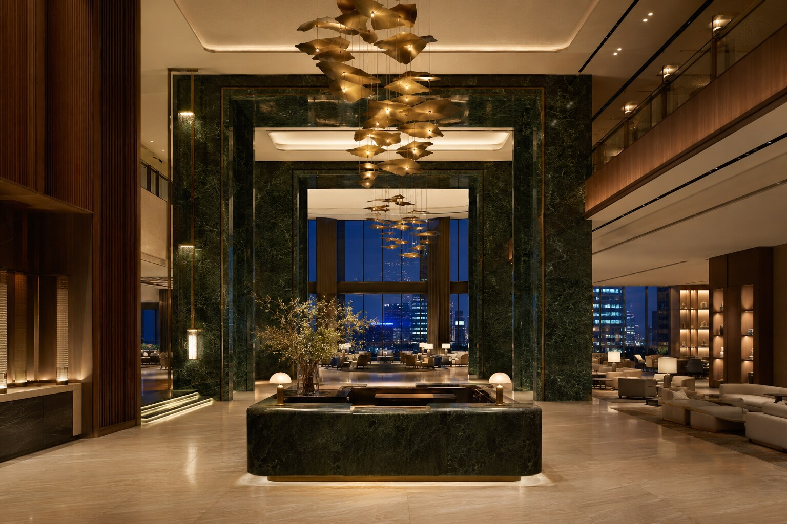

SELECTED CULTURE / 10
영도 컨템포러리YEONGDO CONTEMPORARY ART CENTER
항구와 도시 사이에 열린 공공의 여백을 만든 대형 문화시설.
VIEW PROJECT10PROJECT OVERVIEW
도시와 항구 사이에 문화의 여백을 열다.
보드폼 콘크리트의 무게감과 로이 유리의 투명성, 따뜻한 오크의 촉감을 대비시켰습니다. 광장과 로비, 메인 갤러리, 블랙박스, 교육공간은 항구 풍경을 선택적으로 드러내며 서로 다른 예술 경험을 담습니다.
PROJECT GALLERY
공간의 장면들
